Lista de Exercícios III — Completa (22 questões)
Todas as questões da lista, com resposta final e link para a resolução completa (protocolo de 7 passos) no módulo correspondente.
Esta página é um índice rápido de consulta. Cada questão abaixo mostra o enunciado resumido e a resposta final; para ver a resolução passo a passo completa (leitura de dados, classificação, estratégia, verificação e generalização), siga o link "Ver resolução completa" para o módulo correspondente.
Probabilidade Discreta
1. Sejam A, B, C eventos — notação de conjuntos
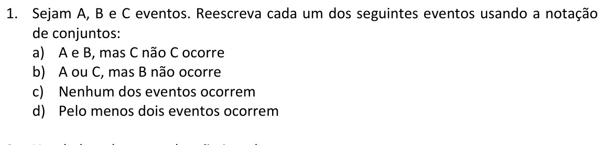
Enunciado original — Lista de Exercícios III| Item | Resposta |
|---|---|
| a) A e B, mas C não ocorre | \(A \cap B \cap \overline{C}\) |
| b) A ou C, mas B não ocorre | \((A \cup C) \cap \overline{B}\) |
| c) Nenhum dos eventos ocorre | \(\overline{A\cup B\cup C} = \overline{A}\cap \overline{B}\cap \overline{C}\) |
| d) Pelo menos dois ocorrem | \((A\cap B)\cup(A\cap C)\cup(B\cap C)\) |
| E se... | Mudança no caminho |
|---|---|
| "Pelo menos um" em vez de "nenhum" | É o complemento de "nenhum ocorre": \(A\cup B\cup C\) — não confundir com "pelo menos dois". |
| "Exatamente dois" em vez de "pelo menos dois" | É preciso excluir o caso em que os três ocorrem: \((A\cap B\cap \overline{C})\cup(A\cap C\cap \overline{B})\cup(B\cap C\cap \overline{A})\). |
| Só A ocorre (nem B nem C) | \(A\cap \overline{B}\cap \overline{C}\) — cada "não ocorre" adicional vira mais um complemento interseccionado. |
Ver resolução completa no Módulo 1 →
b) \((A\cup C)\cap \overline{B}\)
c) \(\overline{A}\cap \overline{B}\cap \overline{C}\)
d) \((A\cap B)\cup(A\cap C)\cup(B\cap C)\)
2. Um dado e duas moedas são jogados
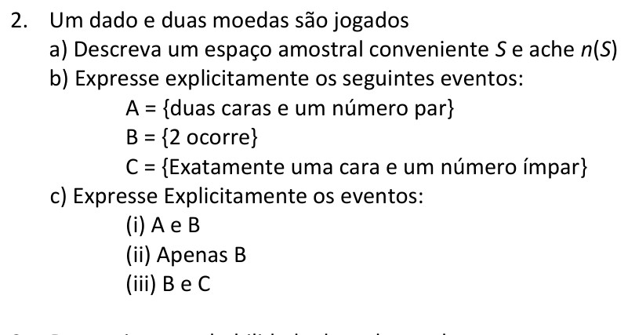
Enunciado original — Lista de Exercícios III| Item | Resposta |
|---|---|
| a) S, n(S) | \(S=\{K,C\}\times\{K,C\}\times\{1,\dots,6\}\), n(S) = 24 |
| b) A, B, C | A={KK2,KK4,KK6}; B={KK2,KC2,CK2,CC2}; C={KC1,KC3,KC5,CK1,CK3,CK5} |
| c) (i) A∩B | {KK2} |
| c) (ii) apenas B | {KC2,CK2,CC2} |
| c) (iii) B∩C | ∅ |
| E se... | Mudança no caminho |
|---|---|
| Fossem 3 moedas em vez de 2 | \(n(S) = 2^3\cdot 6 = 48\); listar A, B, C exige mais cuidado com a combinatória de caras/coroas. |
| "pelo menos uma cara" em vez de "exatamente uma" | C passaria a incluir também casos com duas caras, exigindo somar mais elementos ou usar o complemento "nenhuma cara". |
A∩B = {KK2}
B∖A = {KC2,CK2,CC2}
B∩C = ∅ (par e ímpar não coexistem)
→ conferido elemento a elemento. Bate com o gabarito.
Ver resolução completa no Módulo 1 →
n(S) = 2·2·6 = 24
A={KK2,KK4,KK6}
B={KK2,KC2,CK2,CC2}
C={KC1,KC3,KC5,CK1,CK3,CK5}
A∩B = {KK2}
B∩Ā = {KC2,CK2,CC2}
B∩C = ∅
3. Probabilidades básicas
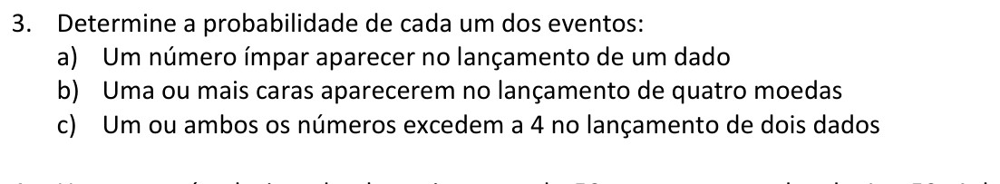
Enunciado original — Lista de Exercícios III| Item | Resposta |
|---|---|
| a) Ímpar no dado | 1/2 |
| b) Uma ou mais caras em 4 moedas | 15/16 |
| c) Um ou ambos excedem 4 (2 dados) | 5/9 |
| E se... | Mudança no caminho |
|---|---|
| Dado com 8 faces em vez de 6 | P(ímpar) continua 1/2 (metade dos resultados), mas a contagem de casos favoráveis muda para 4/8. |
| "nenhuma cara" em vez de "uma ou mais" (4 moedas) | P(nenhuma) = 1/16, e P(uma ou mais) = 1 − 1/16 = 15/16 pelo complemento — mesmo resultado, caminho mais direto. |
| "ambos excedem 4" em vez de "um ou ambos" | Vira interseção em vez de união: P(ambos > 4) = P(A∩B) = (2/6)² = 1/9, bem menor que 5/9. |
b) 1−(1/2)⁴ = 15/16
c) inclusão-exclusão: 2/6+2/6−1/9 = 5/9
→ cada item recalculado isoladamente. Todos batem com o gabarito.
Ver resolução completa no Módulo 2 →
b) P(≥1 cara) = 1-(1/2)⁴ = 1-1/16 = 15/16 = 0,9375 = 93,75%
c) P(A∪B) = 2/6+2/6-1/9 = 5/9 = 0,555... ≈ 55,56%
4. Carta numerada de 1 a 50
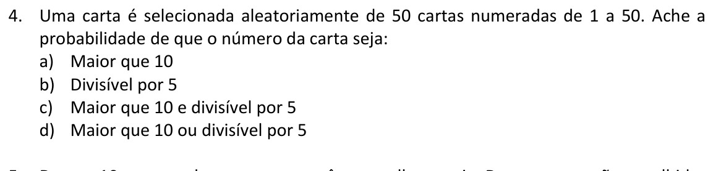
Enunciado original — Lista de Exercícios III| Item | Resposta |
|---|---|
| a) Maior que 10 | 4/5 |
| b) Divisível por 5 | 1/5 |
| c) Maior que 10 e divisível por 5 | 4/25 |
| d) Maior que 10 ou divisível por 5 | 21/25 |
| E se... | Mudança no caminho |
|---|---|
| Cartas de 1 a 100 em vez de 1 a 50 | P(>10)=90/100=9/10; P(div. por 5)=20/100=1/5 — a proporção de múltiplos de 5 não muda, mas a de "maior que 10" sim. |
| "Menor ou igual a 10" em vez de "maior que 10" | P = 10/50 = 1/5, o complemento exato do item a). |
| Divisível por 5 e por 2 (por 10) | P = 5/50 = 1/10, evento mais restrito que "só por 5", exige interseção em vez de um único critério. |
→ confere com a soma direta das cartas {15,20,...,50}. Bate com o gabarito.
Ver resolução completa no Módulo 2 →
a) P(>10) = 40/50 = 4/5 = 0,8 = 80%
b) P(div 5) = 10/50 = 1/5 = 0,2 = 20%
c) P(>10 ∩ div5) = 8/50 = 4/25 = 0,16 = 16%
d) P(>10 ∪ div5) = 4/5+1/5-4/25 = 21/25 = 0,84 = 84%
5. 10 garotas, 3 de olhos azuis, escolhem-se 2
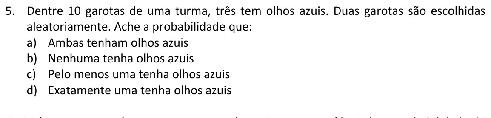
Enunciado original — Lista de Exercícios III| Item | Resposta |
|---|---|
| a) Ambas azuis | 1/15 |
| b) Nenhuma azul | 7/15 |
| c) Pelo menos uma azul | 8/15 |
| d) Exatamente uma azul | 7/15 |
| E se... | Mudança no caminho |
|---|---|
| Escolher 3 garotas em vez de 2 | Usar \(\binom{10}{3}=120\) no denominador e \(\binom{3}{3}=1\) etc. no numerador — a estrutura combinatória é a mesma, só mudam os parâmetros. |
| 4 garotas de olhos azuis em vez de 3 | P(ambas azuis) = \(\binom{4}{2}/\binom{10}{2}=6/45=2/15\), maior que 1/15. |
| Escolha com reposição (a mesma garota pode repetir) | Deixaria de ser combinação sem reposição; seria \((3/10)^2\) para "ambas azuis" em vez de \(\binom{3}{2}/\binom{10}{2}\). |
a)+b)+d): 1/15+7/15+7/15 = 15/15 = 1 ✓ Consistente com o gabarito.
Ver resolução completa no Módulo 2 →
a) \(\binom{3}{2}/\binom{10}{2}\) = 3/45 = 1/15 = 0,0666... ≈ 6,67%
b) \(\binom{7}{2}/\binom{10}{2}\) = 21/45 = 7/15 = 0,4666... ≈ 46,67%
c) 1 - 7/15 = 8/15 = 0,5333... ≈ 53,33%
d) \(\binom{3}{1}\binom{7}{1}/\binom{10}{2}\) = 21/45 = 7/15 = 46,67%
verif: 1/15+7/15+7/15 = 15/15 = 1
6. 3 meninos e 3 meninas em fila
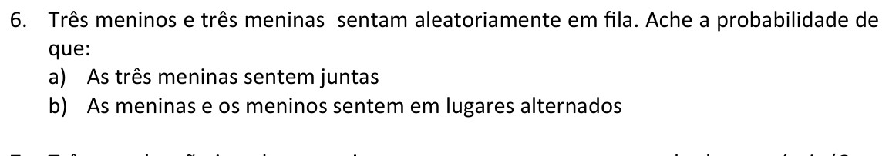
Enunciado original — Lista de Exercícios III| Item | Resposta |
|---|---|
| a) As 3 meninas juntas | 1/5 |
| b) Alternados | 1/10 |
| E se... | Mudança no caminho |
|---|---|
| 4 meninos e 4 meninas em vez de 3+3 | P(meninas juntas) = \(5!\cdot4!/8! = 1/14\); o padrão "bloco único" muda de tamanho, reduzindo a probabilidade. |
| "Meninos juntos E meninas juntas" (dois blocos) | Trata-se agora de 2 blocos permutáveis entre si: \(2\cdot3!\cdot3!/6! = 1/10\), igual ao caso alternado por coincidência numérica, mas o raciocínio é de blocos, não de alternância. |
b) 2·3!·3!/6! = 72/720 = 1/10 Batem com o gabarito.
Ver resolução completa no Módulo 2 →
a) bloco MMM: 4!·3! = 24·6 = 144
P = 144/720 = 1/5 = 0,2 = 20%
b) alternado: MFMFMF, FMFMFM → 2·3!·3! = 72
P = 72/720 = 1/10 = 0,1 = 10%
7. Três moedas
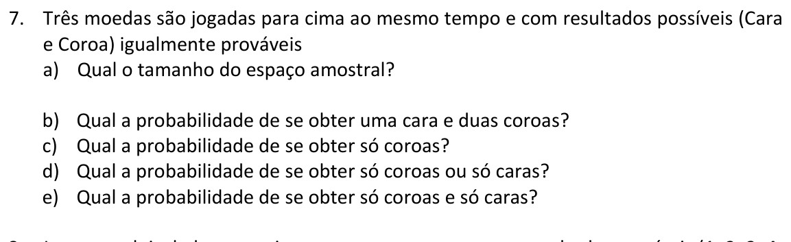
Enunciado original — Lista de Exercícios III| Item | Resposta |
|---|---|
| a) Tamanho de S | 8 |
| b) Uma cara e duas coroas | 3/8 |
| c) Só coroas | 1/8 |
| d) Só coroas ou só caras | 1/4 |
| e) Só coroas e só caras | 0 |
| E se... | Mudança no caminho |
|---|---|
| 4 moedas em vez de 3 | \(n(S)=16\); "uma cara e três coroas" = \(\binom{4}{1}/16 = 4/16 = 1/4\). |
| "pelo menos duas caras" em vez de "uma cara e duas coroas" | Soma os casos com 2 e 3 caras: \((\binom{3}{2}+\binom{3}{3})/8 = 4/8 = 1/2\), diferente do exato. |
Ver resolução completa no Módulo 2 →
a) n(S) = 8
b) P(1 cara,2 coroas) = 3/8 = 0,375 = 37,5%
c) P(só coroas) = 1/8 = 0,125 = 12,5%
d) P(só coroas ou só caras) = 1/8+1/8 = 2/8 = 1/4 = 0,25 = 25%
e) só coroas ∩ só caras = ∅ → P = 0
8. Dois dados
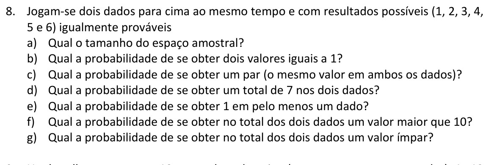
Enunciado original — Lista de Exercícios III| Item | Resposta |
|---|---|
| a) Tamanho de S | 36 |
| b) Dois valores = 1 | 1/36 |
| c) Par (mesmo valor) | 1/6 |
| d) Soma 7 | 1/6 |
| e) 1 em pelo menos um dado | 11/36 |
| f) Soma > 10 | 1/12 |
| g) Soma ímpar | 1/2 |
| E se... | Mudança no caminho |
|---|---|
| Três dados em vez de dois | \(n(S)=216\); "soma 7" tem 15 combinações favoráveis, P=15/216=5/72 — a contagem de somas cresce combinatoriamente. |
| "soma ≥ 10" em vez de "soma > 10" | Inclui a soma 10: casos (4,6),(5,5),(6,4),(5,6),(6,5),(6,6) → 6/36=1/6, maior que 1/12. |
| Dados viciados (não equiprováveis) | A fórmula n(E)/n(S) deixa de valer; seria necessário somar P(i)·P(j) para cada par favorável usando a distribuição real de cada dado. |
→ d) e f) consistentes com essa distribuição. Todos os itens conferem com o gabarito.
Ver resolução completa no Módulo 2 →
b) P(1,1) = 1/36 = 0,0277... ≈ 2,78%
c) P(par) = 6/36 = 1/6 = 0,1666... ≈ 16,67%
d) P(soma 7) = 6/36 = 1/6 ≈ 16,67%
e) 1-(5/6)² = 11/36 = 0,3055... ≈ 30,56%
f) P(soma>10) = 3/36 = 1/12 = 0,0833... ≈ 8,33%
g) P(soma ímpar) = 18/36 = 1/2 = 50%
9. Mãos de 2 cartas de um baralho de 52
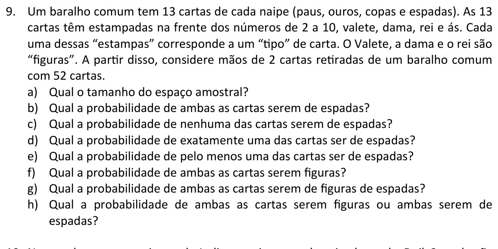
Enunciado original — Lista de Exercícios III| Item | Resposta |
|---|---|
| a) Tamanho de S | 1326 |
| b) Ambas espadas | 1/17 |
| c) Nenhuma espada | 19/34 |
| d) Exatamente uma espada | 13/34 |
| e) Pelo menos uma espada | 15/34 |
| f) Ambas figuras | 11/221 |
| g) Ambas figuras de espadas | 1/442 |
| h) Ambas figuras ou ambas espadas | 47/442 |
| E se... | Mudança no caminho |
|---|---|
| Mão de 3 cartas em vez de 2 | \(n(S)=\binom{52}{3}=22100\); "todas espadas" = \(\binom{13}{3}/\binom{52}{3}\) — mesmo raciocínio, só muda o tamanho da mão. |
| "pelo menos uma figura" em vez de "ambas figuras" | Usar complemento: \(1-\binom{40}{2}/\binom{52}{2}\), mais rápido que somar "exatamente uma" + "ambas". |
| Cartas retiradas com reposição | Deixa de ser combinação; P(ambas espadas) = \((13/52)^2=1/16\) em vez de \(\binom{13}{2}/\binom{52}{2}=1/17\). |
→ confere com contagem direta de mãos que satisfazem f) ou g). Bate com o gabarito.
Ver resolução completa no Módulo 2 →
a) n(S) = \(\binom{52}{2}\) = 1326
b) \(\binom{13}{2}/1326\) = 78/1326 = 1/17 ≈ 0,0588 = 5,88%
c) \(\binom{39}{2}/1326\) = 741/1326 = 19/34 ≈ 0,5588 = 55,88%
d) 13·39/1326 = 507/1326 = 13/34 ≈ 0,3824 = 38,24%
e) 1-19/34 = 15/34 ≈ 0,4412 = 44,12%
f) \(\binom{12}{2}/1326\) = 66/1326 = 11/221 ≈ 0,0498 = 4,98%
g) \(\binom{3}{2}/1326\) = 3/1326 = 1/442 ≈ 0,0023 = 0,23%
h) P(f)+P(g)-P(f∩g) = 11/221+1/442-1/442 = 47/442 ≈ 0,1063 = 10,63%
10. Loteria Daily3
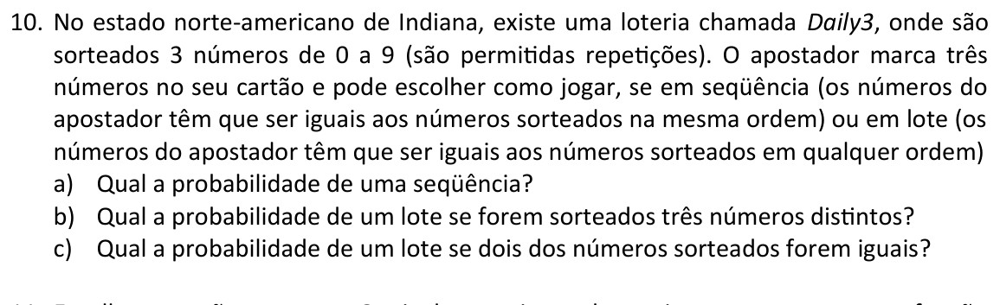
Enunciado original — Lista de Exercícios IIIABC, ACB, BAC, BCA, CAB, CBA — 6 arranjos.
P = 6/1000 = 3/500
AAB, ABA, BAA — 3 arranjos (a repetição de A corta pela metade os 6 arranjos do item anterior).
P = 3/1000
| E se... | Mudança no caminho |
|---|---|
| 4 dígitos em vez de 3 (Daily4) | \(n(S)=10^4=10000\); "sequência exata" = 1/10000; "3 distintos" passa a ter mais subcasos (todos iguais, 2 iguais, 3 distintos, 4 distintos) — ver questão A2 em Provas Anteriores, que lista todos os 12 arranjos do padrão {A,A,B,C}. |
| "todos os três iguais" em vez de "dois iguais" | Só 10 sequências (000,111,...,999) de 1000, então P=10/1000=1/100, bem menor. |
Ver resolução completa no Módulo 2 →
b) ABC ACB BAC BCA CAB CBA → 6/1000 = 3/500
c) AAB ABA BAA → 3/1000
11. Qual função é uma probabilidade válida em S={a₁,a₂,a₃}?
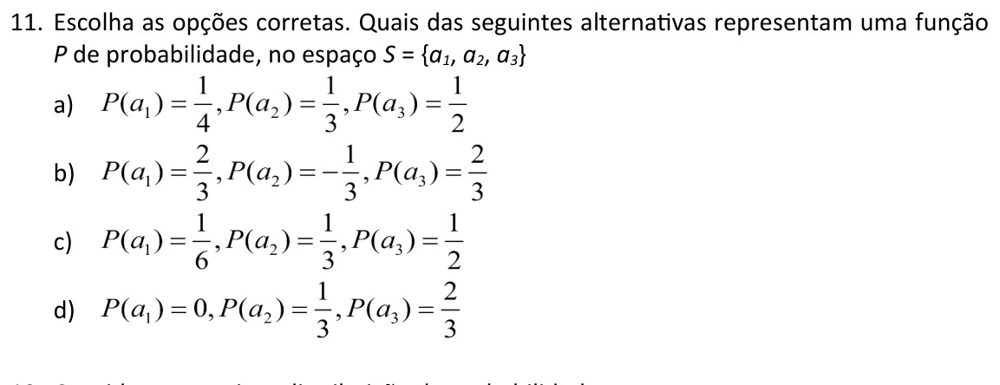
Enunciado original — Lista de Exercícios III| E se... | Mudança no caminho |
|---|---|
| Uma opção tivesse \(P(a_i)=-0.1\) | Reprovaria de imediato por violar não-negatividade, mesmo que a soma desse 1. |
| A soma desse 0.9 em vez de 1 | Reprovaria por não esgotar o espaço amostral — falta 0.1 de probabilidade "sem destino". |
| S tivesse 4 elementos em vez de 3 | O mesmo teste se aplica, só que somando 4 termos em vez de 3. |
d): todos P(aᵢ)≥0, soma=1 → válida
a), b): falha em pelo menos uma condição → inválidas. Opções corretas: c) e d).
Ver resolução completa no Módulo 3 →
a) soma ≠ 1 → NÃO É VÁLIDO
b) P(aᵢ)<0 → NÃO É VÁLIDO
c) todos ≥0, soma=1 → SIM, É VÁLIDO
d) todos ≥0, soma=1 → SIM, É VÁLIDO
12. Distribuição de probabilidade dada
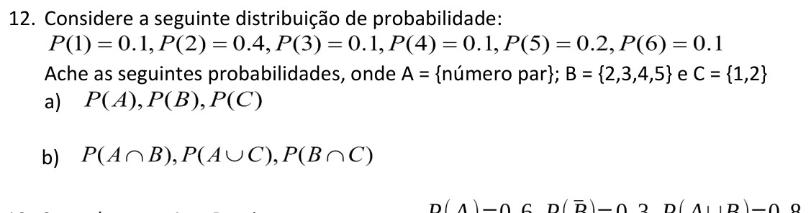
Enunciado original — Lista de Exercícios III| Item | Resposta |
|---|---|
| a) P(A), P(B), P(C) | 0.6, 0.8, 0.5 |
| b) P(A∩B), P(A∪C), P(B∩C) | 0.5, 0.7, 0.4 |
| E se... | Mudança no caminho |
|---|---|
| A e C fossem mutuamente excludentes | \(P(A\cup C)=P(A)+P(C)\) diretamente, sem precisar subtrair \(P(A\cap C)\). |
| Pedissem P(A∪B∪C) | Exige inclusão-exclusão com três eventos: soma dos individuais, menos pares, mais a interseção tripla. |
Ver resolução completa no Módulo 3 →
b) P(A∩B)=0,5=50%
P(A∪C)=P(A)+P(C)-P(A∩C) = 0,7=70%
P(B∩C)=0,4=40%
13. P(A)=0.6, P(B̄)=0.3, P(A∪B)=0.8
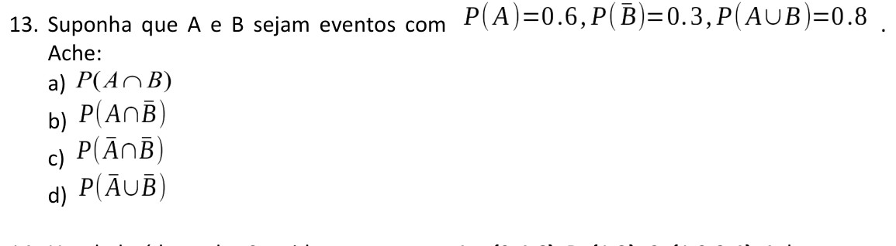
Enunciado original — Lista de Exercícios III| Item | Resposta |
|---|---|
| a) P(A∩B) | 0.5 |
| b) P(A∩B̄) | 0.1 |
| c) P(Ā∩B̄) | 0.2 |
| d) P(Ā∪B̄) | 0.5 |
| E se... | Mudança no caminho |
|---|---|
| Fosse dado P(B) em vez de P(B̄) | Bastaria usar \(P(B)\) direto; aqui é preciso primeiro converter \(P(B)=1-P(\bar B)=0.7\) antes de aplicar inclusão-exclusão. |
| A e B fossem independentes | Poderíamos checar \(P(A\cap B) = P(A)P(B)\) como atalho — aqui 0.6·0.7=0.42≠0.5, logo A e B NÃO são independentes. |
→ confirma d) sem recomputar do zero. Todos os itens conferem com o gabarito.
Ver resolução completa no Módulo 3 →
a) P(A∩B)=P(A)+P(B)-P(A∪B)=0,6+0,7-0,8=0,5=50%
b) P(A∩B̄)=P(A)-P(A∩B)=0,6-0,5=0,1=10%
c) P(Ā∩B̄)=1-P(A∪B)=1-0,8=0,2=20%
d) P(Ā∪B̄)=1-P(A∩B)=1-0,5=0,5=50%
14. Dado lançado — A={2,4,6}, B={1,2}, C={1,2,3,4}
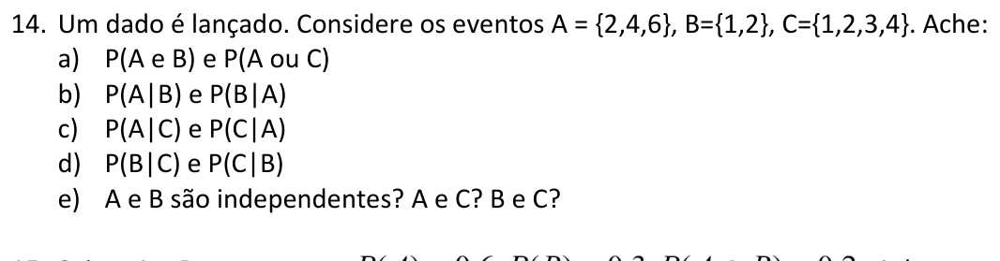
Enunciado original — Lista de Exercícios III| Item | Resposta |
|---|---|
| a) P(A∩B), P(A∪C) | 1/6, 5/6 |
| b) P(A|B), P(B|A) | 1/2, 1/3 |
| c) P(A|C), P(C|A) | 1/2, 2/3 |
| d) P(B|C), P(C|B) | 1/2, 1 |
| e) Independentes? A,B / A,C / B,C | Sim / Sim / Não |
| E se... | Mudança no caminho |
|---|---|
| C = {1,2,3} em vez de {1,2,3,4} | \(P(A|C)=1/3\) e \(P(C)P(A)=1/2\cdot1/2=1/4\ne1/6\cdot... \) — recalcular a interseção \(A\cap C=\{2\}\) muda a conclusão de independência. |
| Perguntassem P(A∩B∩C) | \(A\cap B\cap C = \{2\}\), P=1/6 — não basta multiplicar os três marginais mesmo que os pares sejam independentes, pois independência par a par não implica independência conjunta. |
P(B∩C) = 1/3, mas P(B)P(C) = (1/3)(2/3) = 2/9 ≠ 1/3 → B,C não independentes Todos os itens conferem com o gabarito.
Ver resolução completa no Módulo 4 →
a) A∩B={2} → 1/6 ≈ 16,67% ; A∪C={1,2,3,4,6} → 5/6 ≈ 83,33%
b) P(A|B)=P(A∩B)/P(B)=(1/6)/(2/6)=1/2=50%
P(B|A)=(1/6)/(3/6)=1/3≈33,33%
c) P(A|C)=(1/6)/(4/6)=1/2=50% ; P(C|A)=(1/6)/(3/6)... = 2/3≈66,67%
d) P(B|C)=(2/6)/(4/6)=1/2=50% ; P(C|B)=(2/6)/(2/6)=1=100%
e) A,B: P(A∩B)=1/6=P(A)P(B)=1/2·1/3 → SIM
A,C: P(A∩C)=1/6=P(A)P(C)=1/2·2/3 → SIM
B,C: P(B∩C)=1/3 ≠ P(B)P(C)=1/3·2/3=2/9 → NÃO
15. P(A)=0.6, P(B)=0.3, P(A∩B)=0.2
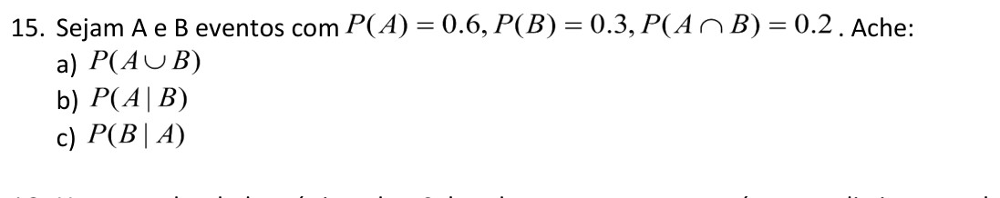
Enunciado original — Lista de Exercícios III| Item | Resposta |
|---|---|
| a) P(A∪B) | 0.7 |
| b) P(A|B) | 2/3 |
| c) P(B|A) | 1/3 |
| E se... | Mudança no caminho |
|---|---|
| A e B fossem independentes | \(P(A\cap B)\) seria \(P(A)P(B)=0.18\) em vez de 0.2 (dado), e \(P(A|B)=P(A)=0.6\), \(P(B|A)=P(B)=0.3\). |
| A e B fossem mutuamente excludentes | \(P(A\cap B)=0\), logo \(P(A|B)=P(B|A)=0\) e \(P(A\cup B)=P(A)+P(B)=0.9\). |
P(B|A)·P(A) = (1/3)(0,6) = 0,2 ✓ Todos os itens conferem com o gabarito.
Ver resolução completa no Módulo 4 →
a) P(A∪B)=0,6+0,3-0,2=0,7=70%
b) P(A|B)=P(A∩B)/P(B)=0,2/0,3=2/3≈0,6667=66,67%
c) P(B|A)=0,2/0,6=1/3≈0,3333=33,33%
16. Par de dados, sabendo que os números são distintos
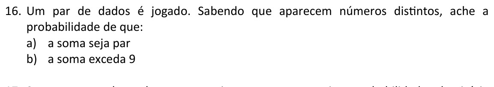
Enunciado original — Lista de Exercícios III| Item | Resposta |
|---|---|
| a) Soma par | 2/5 |
| b) Soma excede 9 | 2/15 |
| E se... | Mudança no caminho |
|---|---|
| "sabendo que a soma é par" em vez de "números distintos" | O espaço condicionante muda de 30 para 18 pares (soma par), alterando toda a contagem de casos favoráveis. |
| "soma excede 8" em vez de "excede 9" | Mais pares entram no evento (soma 9,10,11,12), aumentando a probabilidade condicional para 6/30=1/5. |
a) 12/30 = 2/5 ✓ b) 4/30 = 2/15 ✓ (contagem direta no espaço reduzido) Batem com o gabarito.
Ver resolução completa no Módulo 4 →
a) P(soma par | distintos) = 12/30 = 2/5 = 0,4 = 40%
b) P(soma>9 | distintos) = 4/30 = 2/15 ≈ 0,1333 = 13,33%
17. Cavalos a, b, c — 3 corridas
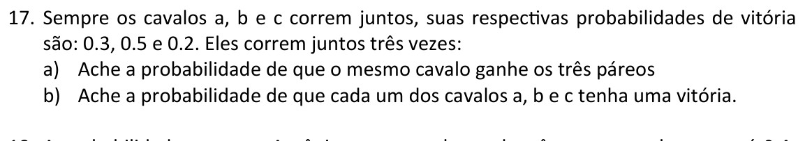
Enunciado original — Lista de Exercícios III| Item | Resposta |
|---|---|
| a) Mesmo cavalo ganha as 3 | 0.16 |
| b) Cada um vence exatamente uma vez | 0.18 |
| E se... | Mudança no caminho |
|---|---|
| 4 corridas em vez de 3 | Para "mesmo cavalo ganha todas": soma \(p_a^4+p_b^4+p_c^4\); para "cada vence pelo menos uma vez" a contagem de arranjos cresce, exigindo princípio da inclusão-exclusão sobre permutações. |
| Cavalos com mesma probabilidade (p=1/3 cada) | P(mesmo cavalo ganha as 3) = \(3\cdot(1/3)^3=1/9\); P(cada vence uma vez) = \(3!\cdot(1/3)^3=6/27=2/9\). |
6·pₐp_b p_c = 0,18 ✓ Bate com o gabarito.
Ver resolução completa no Módulo 5 →
b) 3! arranjos: abc,acb,bac,bca,cab,cba
6·P(a)P(b)P(c) = 0,18 = 18%
18. Antônio, lance de 3 pontos, p=0.4, 5 tentativas
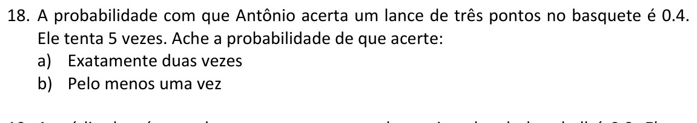
Enunciado original — Lista de Exercícios III| Item | Resposta |
|---|---|
| a) Exatamente duas vezes | 0.3456 |
| b) Pelo menos uma vez | 0.92224 ⚠️ ver nota |
| E se... | Mudança no caminho |
|---|---|
| p=0.5 em vez de 0.4 | P(exatamente duas em 5) = \(\binom{5}{2}(0.5)^2(0.5)^3=10\cdot0.03125=0.3125\), diferente de 0.3456. |
| 10 tentativas em vez de 5 | P(pelo menos uma) = \(1-(0.6)^{10}\approx0.9940\), muito mais próximo de certeza — o complemento decai exponencialmente com n. |
| "no máximo uma vez" em vez de "pelo menos uma" | Soma \(P(0)+P(1) = (0.6)^5+5(0.4)(0.6)^4 = 0.07776+0.2592=0.33696\), evento oposto ao de "duas ou mais". |
Ver resolução completa e nota sobre o gabarito no Módulo 5 →
a) P(X=2)=C(5,2)p²q³ = 10·0,16·0,216 = 0,3456 = 34,56%
arranjos (aa=acerta,ee=erra): aaeee,aeaee,aeeae,aeeea,eaaee,eaeae,eaeea,eeaae,eeaea,eeeaa
b) P(X≥1)=1-P(X=0)=1-q⁵=1-0,07776=0,92224=92,224%
19. Jogador de baseball, média 0.3, 4 tentativas
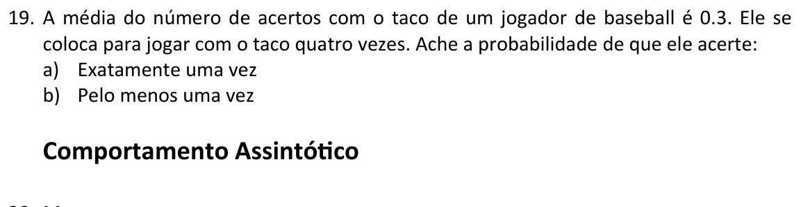
Enunciado original — Lista de Exercícios III| Item | Resposta |
|---|---|
| a) Exatamente uma vez | 0.4116 |
| b) Pelo menos uma vez | 0.7599 |
| E se... | Mudança no caminho |
|---|---|
| 6 tentativas em vez de 4 | P(pelo menos uma) = \(1-(0.7)^6\approx0.8824\), aumentando conforme mais tentativas são dadas. |
| "exatamente duas vezes" em vez de "exatamente uma" | \(\binom{4}{2}(0.3)^2(0.7)^2=6\cdot0.09\cdot0.49=0.2646\), menor que P(exatamente uma) neste caso. |
→ consistente com o item b) via complemento. 0.4116 e 0.7599 conferem com o gabarito.
Ver resolução completa no Módulo 5 →
a) P(X=1)=C(4,1)p¹q³ = 4·0,3·0,343 = 0,4116 = 41,16%
arranjos: aeee,eaee,eeae,eeea
b) P(X≥1)=1-q⁴=1-0,2401=0,7599=75,99%
Comportamento Assintótico
20. Cinco demonstrações de O, Ω, Θ (sem gabarito oficial)
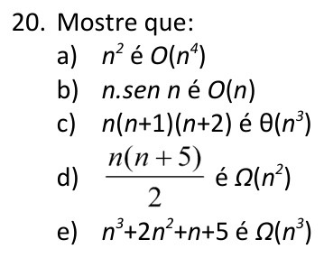
Enunciado original — Lista de Exercícios III| Item | Resultado |
|---|---|
| a) n² é O(n⁴) | c=1, m=1 |
| b) n·sen(n) é O(n) | c=1, m=0 |
| c) n(n+1)(n+2) é Θ(n³) | c₁=1, c₂=6, m=1 |
| d) n(n+5)/2 é Ω(n²) | c=1/2, m=0 |
| e) n³+2n²+n+5 é Ω(n³) | c=1, m=0 |
| E se... | Mudança no caminho |
|---|---|
| Pedissem n² é Θ(n²) em vez de O(n⁴) | Precisaria mostrar as duas pontas simultaneamente (c₁n²≤n²≤c₂n²), não só o limite superior — Θ é mais forte que O. |
| n·sen(n) fosse trocado por n² ·sen(n) | Deixaria de ser O(n): |n²sen(n)|≤n² mas não ≤ c·n para nenhum c fixo quando n cresce, então a cota correta passa a ser O(n²). |
| Pedissem n(n+1)(n+2) é O(n²) (cota errada) | Seria falso: o termo dominante é n³, então nenhuma constante c torna n³≤c·n² para todo n suficientemente grande — bom exercício de refutação por contra-exemplo. |
Ver demonstrações completas no Módulo 6 →
b) |n·sen(n)|≤1·n, ∀n≥0 → c=1,m=0 → =O(n)
c) 1·n³≤n(n+1)(n+2)≤6·n³, ∀n≥1 → c₁=1,c₂=6,m=1 → =Θ(n³)
d) n(n+5)/2 ≥ (1/2)n², ∀n≥0 → c=1/2,m=0 → =Ω(n²)
e) n³+2n²+n+5 ≥ 1·n³, ∀n≥0 → c=1,m=0 → =Ω(n³)
21. Complexidade de programa com O(n), O(n²), O(log n)
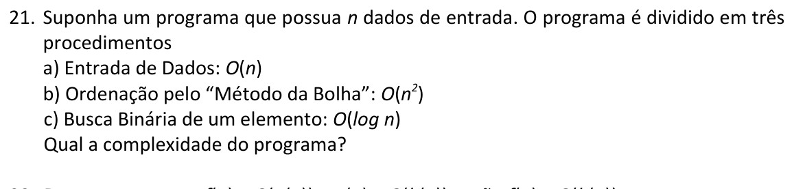
Enunciado original — Lista de Exercícios III| E se... | Mudança no caminho |
|---|---|
| Os trechos fossem aninhados em vez de sequenciais | A complexidade seria o produto das ordens, não o máximo: por exemplo O(n)·O(log n) = O(n log n) para laços aninhados. |
| Houvesse também um trecho O(2ⁿ) | O termo exponencial dominaria todos os demais: resultado final seria O(2ⁿ), pois cresce muito mais rápido que n² para n grande. |
→ n² domina. O(n²) — o termo de maior ordem domina a soma.
Ver resolução completa no Módulo 6 →
n=1000: n²=10⁶ ≫ n=1000 ≫ log n≈10
resultado: O(n²)
22. Transitividade: f=O(g), g=O(h) ⟹ f=O(h)
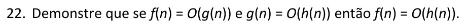
Enunciado original — Lista de Exercícios III| E se... | Mudança no caminho |
|---|---|
| Provar a mesma transitividade para Ω | Mesma estrutura de prova, mas com as desigualdades invertidas: \(|f(n)|\ge c_1|g(n)|\) e \(|g(n)|\ge c_2|h(n)|\), gerando \(c=c_1c_2\) do mesmo jeito. |
| Provar a transitividade para Θ | Precisa combinar as provas de O e Ω simultaneamente, com duas constantes superiores e duas inferiores. |
Ver demonstração completa no Módulo 6 →
|f|≤c₁|g|≤c₁c₂|h| = [circulado: (c₁c₂)]
∀n≥max(m₁,m₂)
∴ f=O(h), c=c₁c₂, m=max(m₁,m₂)